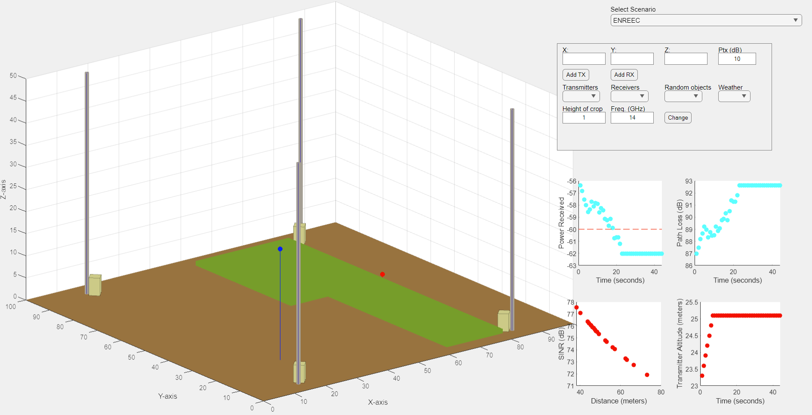
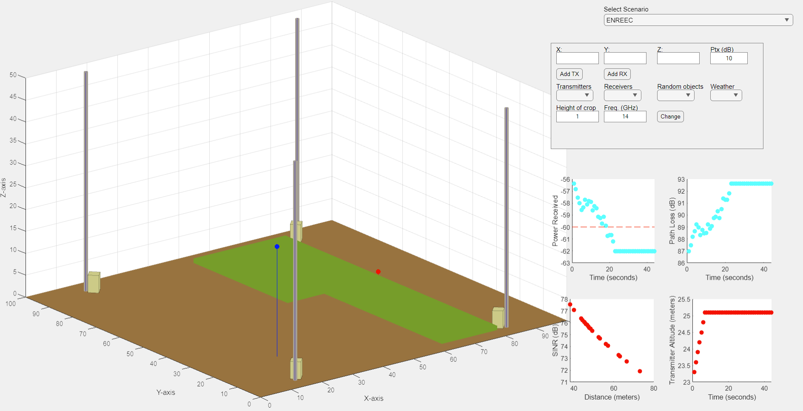

Elizabethtown College student double-majoring in computer and data science, seeking a summer internship to apply and reinforce my education, with the possibility of transitioning to full-time employment after graduation. A team player with excellent communication skills who thrives when working with people of diverse backgrounds.
 
